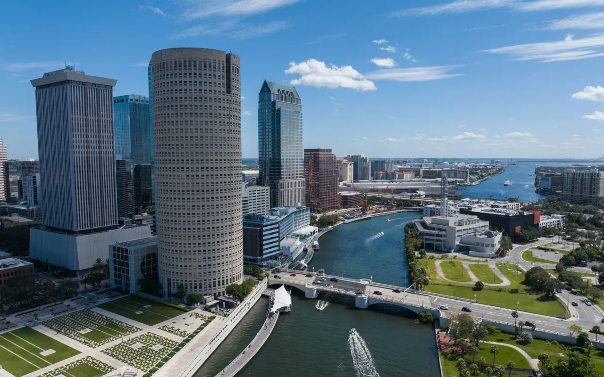

The City of Orlando
Home
About
History
Contact Us

Population: 408,510.
Year Founded: 1855.
Region: West Central Florida.
Classification: Urban.
Average Income: 1.65% Lower Than the State.
Main Attractions: Busch Gardens Tampa Bay, The Florida Aquarium, ZooTampa.
Created for D277©